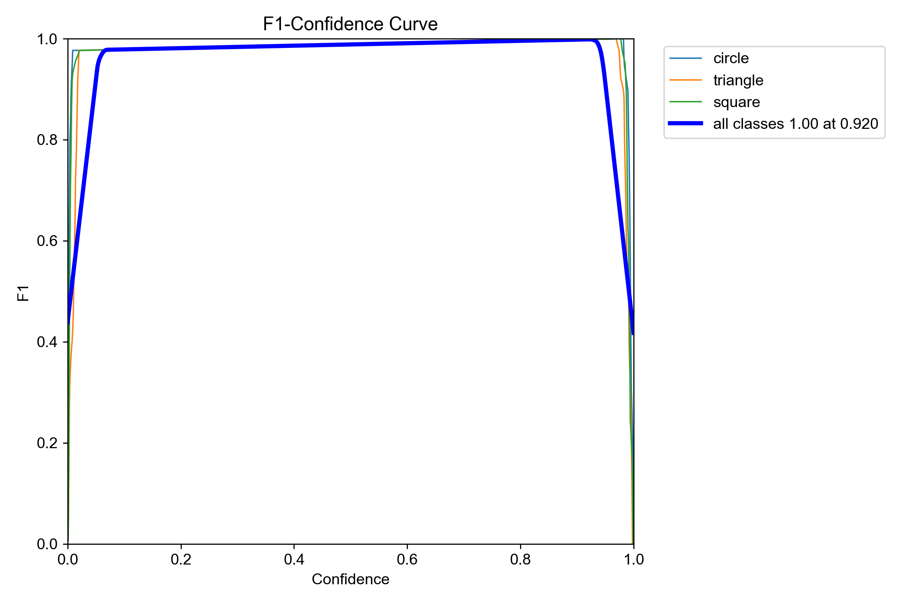
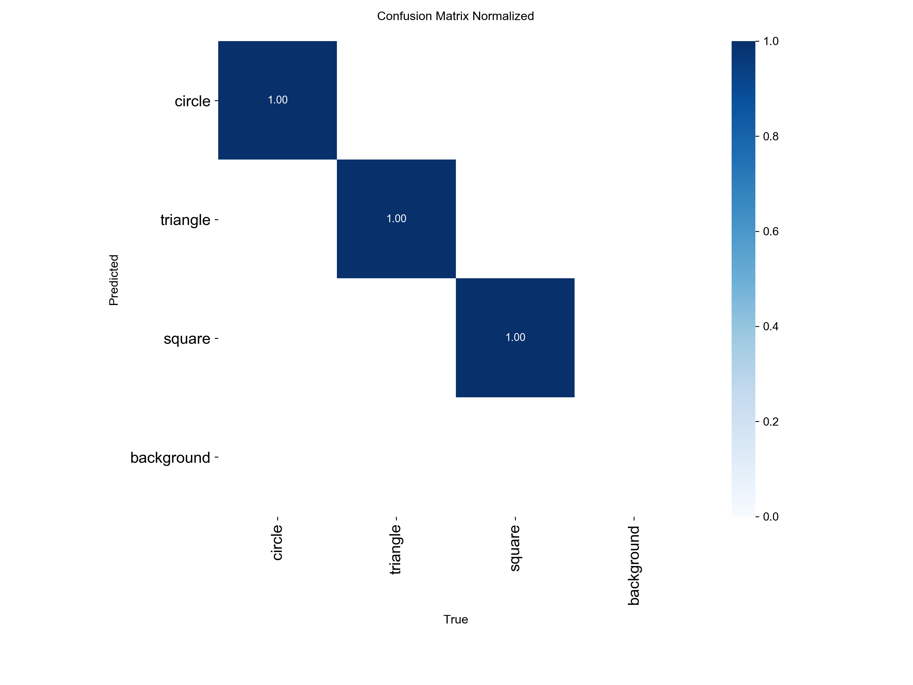
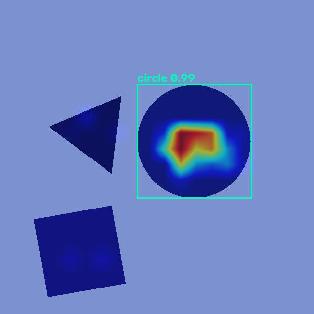
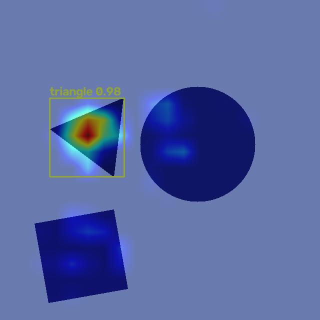
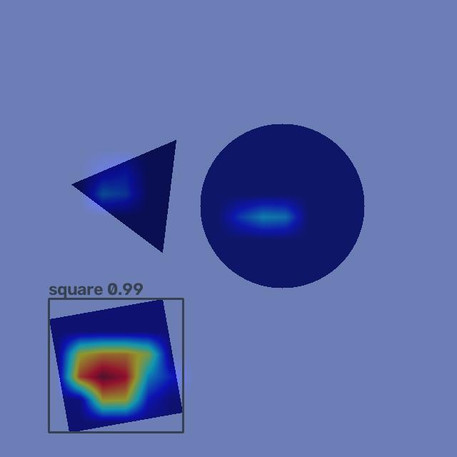
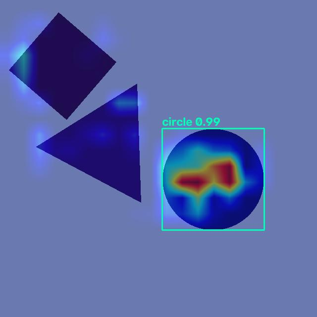
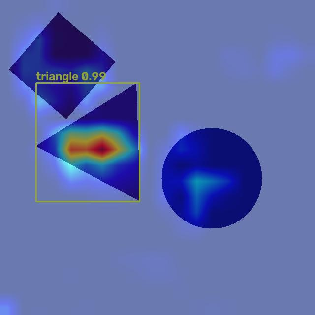
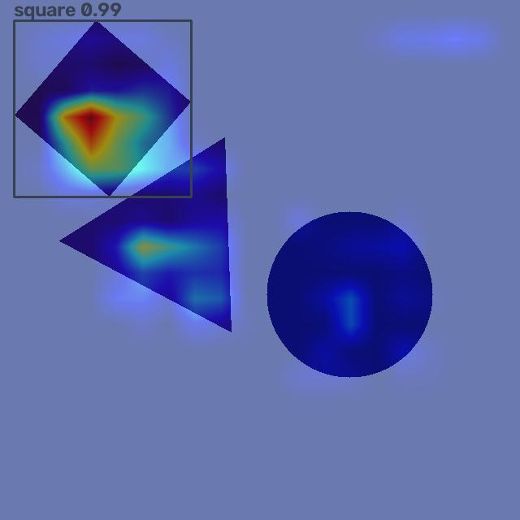

Shape Reasoning v2
การประเมินโมเดล YOLO11n สำหรับตรวจจับวงกลม สามเหลี่ยม และสี่เหลี่ยมในภาพหลายวัตถุ พร้อมตรวจสอบว่าโมเดลตอบสนองต่อรูปทรงเชิงเรขาคณิตและให้คำอธิบายที่มีความหมายหรือไม่
Executive summary
บน multi-object test, locked original และ robustness variants
ไม่พบ wrong class, missed detection หรือ duplicate
70 คู่ รวม control ที่ไม่เปลี่ยนรูปทรง
ข้อสรุปหลัก
การเพิ่มภาพหลายวัตถุและกรณีรูปทรงซ้ำใน Dataset v2 แก้ distribution shift ของ baseline เดิมได้อย่างชัดเจน โมเดลตรวจจับได้ดีมาก แต่ผล Grad-CAM ยังไม่พอจะสรุปว่าโมเดลกำลังใช้ “มุม” หรือ “เส้นขอบ” ตาม rationale ของมนุษย์อย่างเฉพาะเจาะจง
Model artifact
ไฟล์ checkpoint ที่ใช้ใน evaluation ทั้งหมด
1. Experiment design
สิ่งที่ปรับปรุงจาก baseline เดิม
Baseline เดิมฝึกด้วยภาพวัตถุเดี่ยว แต่ถูกทดสอบกับภาพสามวัตถุ จึงเกิดปัญหา distribution shift, class confusion และ duplicate detection
V2 เพิ่มภาพหลายวัตถุ ภาพที่มีรูปทรงชนิดเดิมซ้ำกัน ฉากยาก ภาพพื้นหลังเปล่า รวมถึง object mask, boundary mask, rationale mask และ dataset validator
Dataset
| Train | 295 images |
| Validation | 48 images |
| Single-object test | 30 images |
| Locked multi-test | 30 images |
| Annotations | 558 objects |
Training configuration
| Model | YOLO11n |
| Epochs | 30 |
| Batch | 16 |
| Image size | 640 |
| Device | CPU |
| Seed | 42 |
2. Detection performance
| Split | Images / objects | Precision | Recall | Exact count | Mean IoU | Error summary |
|---|---|---|---|---|---|---|
| Validation | 48 / — | 0.997 | 1.000 | — | — | ใช้เลือก threshold |
| V2 multi-object test | 30 / 90 | 1.000 | 1.000 | 1.000 | 0.987 | 0 wrong class · 0 duplicate · 0 miss |
| Locked original multi-test | 30 / 90 | 1.000 | 1.000 | 1.000 | 0.987 | 90 correct · 0 FP · 0 FN |
| Robustness variants | 90 / 90 | 1.000 | 1.000 | 1.000 | 0.988 | background / color / color-background ผ่านทั้งหมด |
Mean IoU เป็นค่าเฉลี่ยโดยประมาณจาก metric JSON ของแต่ละ split; class-level IoU: circle 0.989, triangle 0.987, square 0.986 บน locked original


3. Confidence / NMS calibration
เลือกค่าจาก validation เท่านั้น ก่อนยืนยันบน locked test:
| Parameter | Selected value | Selection result |
|---|---|---|
| Confidence threshold | 0.20 | Precision 1.000 · Recall 1.000 |
| NMS IoU | 0.50 | Exact-count accuracy 1.000 · 0 duplicate |
| Match IoU | 0.50 | ใช้สำหรับจับคู่ prediction กับ ground truth |
4. Counterfactual geometry test
| Counterfactual | Pairs | Pass rate | Mean confidence Δ | Interpretation |
|---|---|---|---|---|
| Circle → octagon | 10 | 80% | −0.227 | ยาก เพราะ octagon ใกล้เคียง circle |
| Circle → hexagon | 10 | 100% | −0.986 | ความมั่นใจลดลงชัดเจน |
| Triangle → clipped apex | 10 | 100% | −0.359 | ไวต่อการทำลายมุมยอด |
| Square → rounded corners | 10 | 100% | −0.992 | ไวต่อความเป็นเหลี่ยม |
| Unchanged controls | 30 | 100% | 0.000 | ไม่เกิดการเปลี่ยน confidence โดยไม่จำเป็น |
| Overall | 70 | 97.14% | — | สนับสนุน geometric sensitivity |
อ่านผลอย่างระมัดระวัง
Counterfactual สนับสนุนว่าโมเดลไวต่อการเปลี่ยนรูปทรงจริง โดยเฉพาะการทำลายมุมหรือทำมุมให้โค้ง
แต่ผลนี้ยังไม่พิสูจน์ว่าโมเดลใช้ rationale เดียวกับมนุษย์ หรือกำลังนับจำนวนมุมอย่างชัดเจน
5. Grad-CAM and faithfulness
| Class | Object energy | Other-object energy | Rationale energy | Top-CAM IoU | Top-CAM confidence drop | Random drop |
|---|---|---|---|---|---|---|
| Circle | 0.823 | 0.096 | 0.038 | 0.029 | 0.267 | 0.009 |
| Triangle | 0.386 | 0.250 | 0.005 | 0.009 | 0.063 | −0.001 |
| Square | 0.610 | 0.241 | 0.003 | 0.008 | 0.241 | 0.001 |
Top-CAM deletion ทำให้ confidence ลดลงมากกว่าการลบแบบสุ่มทุก class จึงมี evidence ด้าน faithfulness แต่ rationale precision/IoU ยังต่ำ
CAM metrics · Faithfulness metrics · Grad-CAM prediction records
Grad-CAM gallery — representative locked multi-test image
แต่ละภาพเป็น class-specific Grad-CAM แบบเต็มภาพ; กรอบเป็น prediction ของ class เป้าหมาย






6. Gates and limitations
PASS Detection gate
โมเดลตรวจจับทั้งสาม class และจำนวนวัตถุได้ถูกต้องในทุก split ที่รายงาน รวม robustness variants
PARTIAL Reasoning gate
Counterfactual ผ่านสูงและ CAM มี faithfulness แต่ heatmap ยังไม่แสดง rationale เชิงเรขาคณิตอย่างจำเพาะ
ข้อจำกัดที่ควรสื่อสาร
- CAM เป็น evidence ของ feature importance ไม่ใช่ proof ว่าโมเดลมี symbolic geometric reasoning
- Rationale mask ของ triangle/square มี overlap ต่ำ แม้ detection จะถูกต้อง
- ความแรงของ heatmap ถูก normalize ต่อภาพ จึงไม่ควรเทียบสีแดงข้ามภาพเป็น absolute score
- ผลทั้งหมดเป็น synthetic shape benchmark; ยังไม่แทนความยากของภาพธรรมชาติ
7. Recommended next experiments
- เพิ่ม geometry supervision เช่น segmentation หรือ keypoint/vertex head
- ทดสอบ contour-based counterfactual สำหรับ circle แทนการคาดหวังให้ทั้งพื้นที่วงกลมเป็น positive heatmap
- เปรียบเทียบ Grad-CAM กับ explanation จาก segmentation/keypoint branch
- คง YOLO11n detector นี้เป็น control model เพื่อแยก “ตรวจจับถูก” ออกจาก “อธิบายได้ตาม rationale ของมนุษย์”
{kind=link}
{kind=link}
{kind=link}
{kind=link}